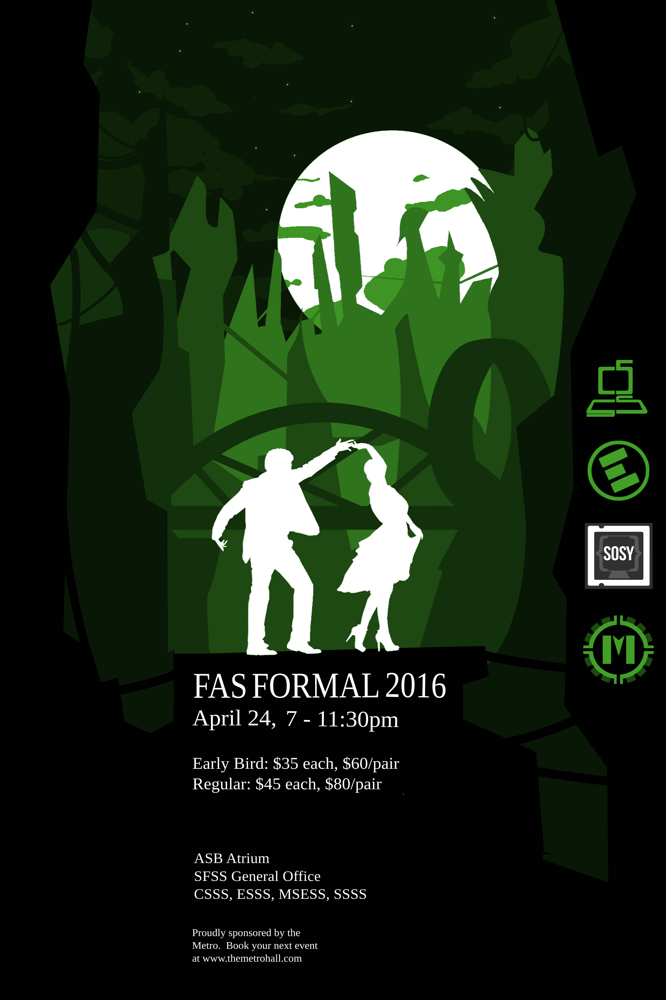

FAS Formal
FAS Formal is an annual event when it comes to Software Systems. It's a dinner party for the entire faculty of applied Sciences. Every attendee dresses up for the occasion awaiting to have a good time after the hardships of the semester. People socialize with different classmates and other majors to grow the bond within the entire Faculty of Applied Sciences.
Systems Frosh

Systems Frosh is an event that the SSSS executive team holds each year for the new first years coming into Software Systems. These events relax the first years, allow them to know their peers that will be with them throughout university, and understand the tips and tricks behind Software Systems to accomplish goals while maintaining balance in life.
.col-sm-4